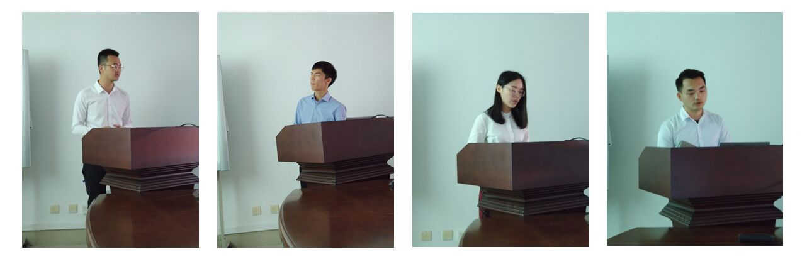
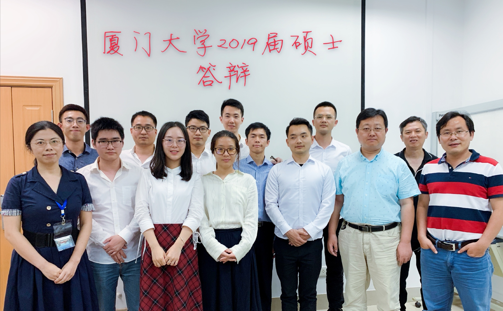

春和景明、花开灿烂之际，我实验室学子迎来了毕业设计答辩的重要时刻。
2019年5月19日，厦门大学信息与通信工程系智能数据分析与处理实验室2019届硕士研究生论文答辩顺利举行，此次答辩由远道而来的华侨大学计算机学院副院长杜吉祥教授担任主席，丁兴号、蔡聪波教授，廖英豪、黄悦副教授担任委员。研二研一参与旁听。

“繁花春满园，群生则锦绣。” 答辩按照陈浩鹏、梁伯荣、何福金、樊志文、陈云舒、王继天、唐圳、舒炳林、余宪、吴华峰的顺序依次进行，从底层的图像质量评价到高级的文字检测，从经典的MRI重建到最新的GAN、主动学习，研三的毕业生们以其三年的学识，为我们带来了一场文化盛宴。
答辩会严格履行我院研究生论文答辩程序，首先参加答辩的研究生在规定的时间内围绕自己的论文进行阐述，之后答辩评委对该同学的论文进行提问，研究生认真回答，并仔细记录各位评委提出的宝贵意见，各答辩委员根据自己的专业判断独立为每位参加答辩的研究生进行评分并填写答辩表决票。所有学生答辩结束后，评委召开内部会议，合议答辩结果，确定答辩通过、需要二次答辩、论文需重点抽查的学生名单并评选了优秀论文。最后经答辩委员会慎重讨论及投票表决后，我实验室2019届硕士研究生均通过毕业答辩。

答辩结束之后，研三学生与答辩委员合影留念。